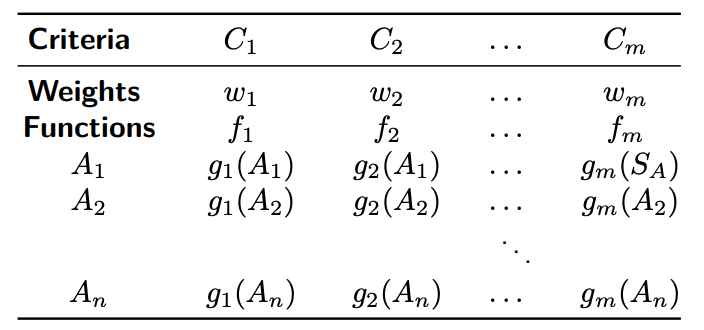

JMcDM
A package for Multiple-criteria decision-making techniques in Julia.
The problem
Suppose a decision process has n alternatives and m criteria which are either to be maximized or minimized. Each single criterion has a weight 0 ≤ wᵢ ≤ 1 where sum of wᵢ is 1. fᵢ is either maximum or minimum. gⱼ(.) is the evolution function and it is choosen as gⱼ(x) = x in many methods. A multiple criteria decision problem can be represented using the decision table

without loss of generality. When A₁, A₂, ..., Aₙ are alternatives and C₁, C₂, ..., Cₙ are different situations of a single criterion then the decision problem is said to be single criterion decision problem. If Cⱼ are strategies of two game players then gⱼ(Aᵢ) is the gain of the row player when she selects the strategy i and the column player selects the strategy Cⱼ.
The package mainly focuses on solving these kinds of decision problems.
For whom?
Multiple-criteria decision-making is an inter-discipline subject and there is a vast amount of research in the literature in this area. However, the existing software packages in this area are generally focused on a small subset of tools. JMcDM is a developer and researcher-friendly Julia package that combines the developed methods, utility functions for implementing new ones, and serves an environment for comparing results of multiple analyses.
Installation
Please type
julia> ]
(@v1.7) pkg> add JMcDMor
julia> using Pkg
julia> Pkg.add("JMcDM")in Julia REPL to install package in the standard way, otherwise, you can clone the repository and type
julia> ]
(@v1.7) pkg> develop .to start developing new methods.
Package Dependencies
Since the Julia package manager installs all of the dependencies automatically, a standard user doesn't need to install them manually. The package dependencies are listed below:
- DataFrames
- GLPK
- JuMP